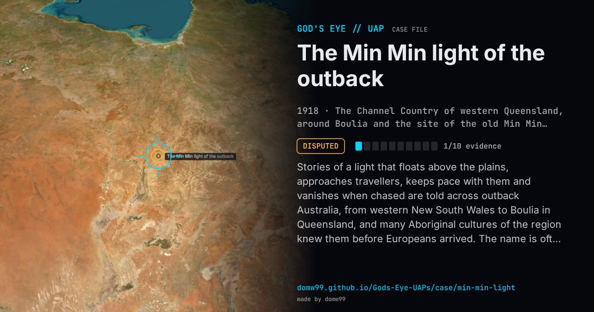

The Min Min light of the outback

Stories of a light that floats above the plains, approaches travellers, keeps pace with them and vanishes when chased are told across outback Australia, from western New South Wales to Boulia in Queensland, and many Aboriginal cultures of the region knew them before Europeans arrived. The name is often tied to the Min Min Hotel, a coach stop east of Boulia, where a stockman is said to have seen the light in 1918, though neither that origin nor an Aboriginal word for the name has been confirmed. Some witnesses describe a dim glow, others a light bright enough to throw shadows.
Explanation
The neuroscientist John Pettigrew of the University of Queensland argued in 2003, from his own observations and a field test in the Channel Country, that the light is a Fata Morgana: a cold, dense layer of air near the ground bends light from a source far beyond the horizon, a campfire or a car’s headlights, so that it seems to float close by and to move as the observer moves. That fits many accounts, including lights that pace a car, but not all; other suggestions (bioluminescent insects or owls, marsh gas, piezoelectricity) have no evidence.
What was seen
Shape: A fuzzy, disc-shaped light hovering just above the horizon, usually white, sometimes changing colour
Witnesses: Stockmen, travellers and Aboriginal people of the region, over generations
Duration: Minutes to hours; it is said to follow people
Sources
- Wikipedia — Min Min light
- Pettigrew, “The Min Min light and the Fata Morgana”, Clinical and Experimental Optometry 86 (2003)
- University of Queensland — UQ scientist unlocks secret of Min Min lights (2003)
Browse
- Australia
- 1910s
- Disputed
- Recurring lights
- Many independent witnesses
- Lights and fireballs
- Discs and saucers